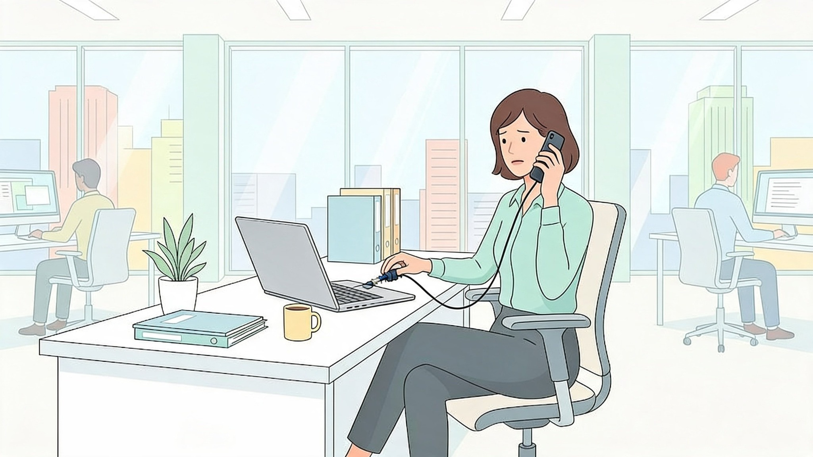

A proteção da informação depende do ambiente físico. Computadores destravados, documentos expostos e acesso de pessoas não identificadas podem comprometer dados mesmo quando os sistemas digitais estão protegidos.
Tailgating acontece quando uma pessoa entra em uma área restrita aproveitando a abertura feita por alguém autorizado.
Crachás e controles de entrada só funcionam quando são utilizados corretamente. Pessoas sem identificação adequada devem seguir o processo oficial de acesso.
Ao se afastar da estação, bloqueie o computador. No Windows, o atalho Win + L permite bloquear rapidamente a sessão.
Papéis, mídias removíveis e anotações sensíveis também devem ser guardados quando não estiverem em uso.
Uma pessoa sem identificação entra atrás de um colaborador por uma porta restrita e observa informações expostas em uma mesa.
Mesmo sem acessar qualquer sistema diretamente, ela pode obter dados úteis para outras tentativas de fraude ou engenharia social.
Mantenha o crachá visível, não facilite acessos sem identificação e bloqueie a tela sempre que se afastar.
Ao final do expediente, guarde documentos e mídias em locais apropriados.
Segurança física e segurança digital fazem parte da mesma proteção.
Terminou?
Aula concluída. Siga para a próxima!